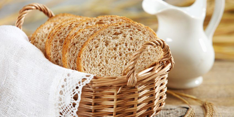

DIVERSAS RECEITAS DE PÃES
Home
Pães Doces
Pães Salgados
Contato

Aprenda a fazer pão em casa e tenha um café da manhã sempre caprichado e quentinho.
Pão de Queijo
Pão de Ervas
Pão Costela
Pão de Pizza
Pão Recheado